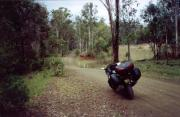

A roughly chronological pictorial of my round Australia trip that I did in Dec 99 - Feb 2000 on my Blackbird. As I was doing the trip, I wrote an online diary for a local online motorcycle site MCNews.com.au. These pictures describe many of the events I've written about. For larger versions of the photos, click on them. These are only some of the 6 rolls of film that I took. They are the photos that best summed up my experience and what I really saw.
Funny thing looking through these is that I didn't take many photos of the first part of the trip. Not surprising given the crappy weather. So what you see is mainly the second half of the trip after I have left Sydney.
| Home Packing ready to go. The open pannier in the centre contains the tent, sleeping bag, extra ground sheet/fly (army issue hoochie), a pair of thongs, towel and boardies/speedos. Tank bag on the lower left and the top-box behind. | |
| Mt Gambier An extinct volcanic crater that juts up out of the surrounding landscape. Here we are looking north-ish from one side of it out across the south australian countryside. | |
| GOR - The Great Ocean Road. Well, not quite, this is one of the back roads that lead down to it but it all pretty much alike. From where this road joins the GOR through to Melbourne - 100+ Km away, you have a shear cliff one side going up and one on the other side going to the ocean. West of this road is all exactly like this. Temperate rainforest, slightly damp road but some magnificent roads. No wonder this has the reputation of being one of The great motorcycling roads in the world. This is how I spent Christmas day. Wonderful present don't you think! | |
| Kingscliff A small town just sound of the NSW/QLD border. Mainly tourist oriented with a lot of small apartments etc. This gorgeous little camping ground was located out the back of one of the local caravan parks. Note that the scene here is a typical morning fair for this trip. Wet towel out to dry after a shower and shit just generally strewn everywhere. | |
| Mt Warning Gold coast hinterland. This group I met on the road while enjoying the local scenery. One of the number was out to learn how to corner. She'd been riding for 3 years but in outback Queensland where corners where what you did to go around a pothole. Played tag a lot of the time with the guy on the worked ZZR1100. Kept up too! (Impressive considering I was running in full touring mode with panniers, tank bag etc) | |
| Airlie Beach The gateway to the Great Barrier Reef. Pissed down with rain a lot of the time I was here, hence the lean-to to put my bags under. Met James and Julia here as they camped right next to me on the left side of the photo. Spent a few days here going scuba diving on the reef among other things. | |
|  | Back of Nowhere - QLD. The infamous day. After having
lost my headlight due to a bloody huge rock and then the right foot peg, I
decide to take the shortest route to some accommodation. Unfortunately my
map reading skills also went bush, and so that's exactly where I found myself.
These two shots pretty much sum up going through the Dawes Range and State
Forest.
While the scenery looks gorgeous, what it doesn't show you is the marble sized gravel and the very steep and twist roads that I had to travel on. Would have been wonderful except for the fact there was no tar and I didn't really have a working rear brake. |
| Mt Isa When it's hot, you don't bother with the tent. Just sleep under the open skies. Mt Isa is a mining town. Therefore the caravan parks are full of permanent residents. I caught up with James and Julia here (they were camping just to the right of shot) when their 4WD decided to toss bits of its gearbox down the road. We were the only temporary residents there and we kept getting odd looks. James was very happy to leave after 6 days there. | |
| The outback For the foreigners, this is the real outback. 5km out of Mt ISA and this is all you see for the next 200 odd kilometers. A thin veneer of tar unceremoniously dumped straight on top of the surrounding red dirt. Once this dirt gets in it never comes out again - clothes, bikes, hair everything. Now, imagine tearing along this road dodging 1.5 metre high Wedge Tail eagles (that's when they are standing up on the ground, not flying!) and then seeing a 5 trailer road train bearing down on you at 140+km/h leaving a thick choking red cloud behind it that you can't see through for the next 5 minutes and you have a pretty good idea of what the place is like. | |
| NT Border As unbelievable as it sounds, this is the border to the Northern Territory. About 100m behind this shot is the scenery you see in the above picture. Hit the border and it is as though someone bulldozed the entire joint flat. Not a tree in sight as you can see! However, this is gateway to the bigbore bike rider's paradise. No Speed Limits! Funny feeling passing cop cars at 250km/h and not worrying about getting a ticket. Plays havoc on your tyres. 230km/h on 40-45 degree celcuis with the gravel/tar combo road rips the crap out of the centre of the rear tyre. | |

|
MacDonnell Ranges near Alice Springs. A Vertical mountain range that stretches some couple of hundred kilometers. Spent the day travelling through here and met Beau on the Suzuki Freewind. The ranges are the home to the next shot, and many more like it. This is looking east in the late afternoon with the sun setting behind me. |
| Ormiston Gorge Once a jolly swagmag camped by a billabong, under the shade of a coolibah tree so go the words of Waltzing Matilda. Couldn't think of a better way of describing this place. Went for a swim up around the corner here and then sat in the rain as an outback storm rumbled overhead. |
|
| Devil's Marbles A Natural occurrance of thousands of boudlers that have worn through millions of years to look like this. My bike gives you an idea of the scale of these things. | |
| Uluru The famous Rock from a distance on the way out there. This is taken from the top of a dune about 40km away. Red dirt, and more red dirt and even more red dirt.... | |
| King's Canyon This small watering hole is known as The Garden of Eden. It's easy to see why. All around is scotching hot 40-plus degree days that fry an egg on contact and we have this idealic gorge with cold running water. | |
| Glendambo Errrr... can't say more other than aussie humour at its best. | |
| Kulgera Hundreds of kilometres from anywhere and I run across this old BSA. Nothing special you think. Well, take a look at the large photo. Comes with two saddle seats, knobblies and packed to the hilt. What you can't see is the Belgian plates on it, or the rider and his pillion. This bike is on its second lap of the world. And this guy spends a lot of time doing non-tarmac work. He asked me about the state of the roads from here directly through to Ceduna. Take a look at the map (Kulgera is on the SA/NT border). That's about 800km in a straight line across red dirt with not a house, let alone a petrol station, in sight. | |
| The Nullarbor A name derived from the latin Nullus Arboris - no trees means that quite literrally. Growing on limestome, the shrubs barely are a metre high. Seeing this makes me realise that I'm almost finished the trip. Only a couple of thousand more kilometres to go. | |
| Head of Bight The head of the Great Australian Bight (the big curved bit on the bottom of the country. This is the KR-1S nutter that I came across out here. With only a backpack and a couple of tools, this young kid was leaving home for Perth. We had to nurse him from here to Perth with a chain that was stretching an inch every 200km (el-cheapo special!). In winter they do whale watching here when the annual migration takes place. | |
| Balladonia Roadhouse The second last night. The three bikes that formed the last part of the road trip. My Blackbird, a Honda KLV750 and the KR-1S. Couldn't think of a more odd assortment of bikes riding together. |
{kind=link}
{kind=link}
{kind=link}
{kind=link}
{kind=link}
{kind=link}
{kind=link}
{kind=link}
{kind=link}
{kind=link}
{kind=link}
{kind=link}
{kind=link}
{kind=link}
{kind=link}
{kind=link}
{kind=link}
{kind=link}
{kind=link}
{kind=link}